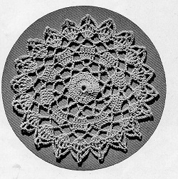

|
Nosegay Bedspread MATERIALS: CLARK'S O.N.T. or J. & P. COATS BIG BALL BEST SIX CORD MERCERIZED CROCHET, size 20 SINGLE SIZE DOUBLE SIZE 44 balls of White or Ecru. 58 balls of White or Ecru. MILWARD'S STEEL CROCHET HOOK No. 8 or 9. GAUGE: Each motif measures 4 inches in diameter after blocking. For a single size spread about 68 x 104 inches, make 17 x 26 motifs. For a double size spread about 92 x 104 inches, make 23 x 26 motifs. MOTIF: Starting at center, ch 8. Join with sl st. 1st rnd: Ch 3 (to count as 1 dc), 19 dc in ring. Join with sl st to top st of ch-3 first made (20 sts). 2nd rnd: Ch 3, dc in same place as sl st, 2 dc in each dc around. Join with sl st (40 sts). 3rd rnd: * Ch 7, skip 3 dc, sc in next dc. Repeat from * around, ending with ch 3, skip 3 dc, tr in same place as sl st (10 loops). 4th rnd: Ch 6, dc in top of tr, * ch 3, in center ch of next ch-7 loop make dc, ch 3 and dc. Repeat from * around, ending with ch 3, sl st in 3rd st of ch-6 first made. 5 5th rnd: Ch 3, * 4 dc in next ch-3 sp, dc in next dc, ch 3, dc in next dc. Repeat from around, ending with ch-3, sl st in 3rd st of ch-3 first made. 6th rnd: Ch 3, dc in next 5 dc, * ch 3, sc in next sp, ch 3, dc in next 6 dc. Repeat from * around, ending with ch 3, sl st in 3rd st of ch-3 first made. 7th rnd: Ch 7, skip 4 dc, sc in next dc, ch 7, dc in next dc. Repeat from * around, ending with ch 3, tr in same place as sl st on previous rnd. 8th rnd: Ch 3, 4 dc in top of tr, * ch 2, 5 dc in center st of next loop. Repeat from * around, ending rnd with half dc in 3rd st of ch-3 first made. 9th rnd: Sc in sp, ch 1, dc between ch-3 and following dc of next dc-group, * ch 1, dc between 2nd and 3rd dc of same group, ch 1, dc between 3rd and 4th dc, ch 1, dc between 4th and 5th dc of same group, ch 1, sc in next sp (between groups), ch 1, dc between 1st and 2nd dc of next dc-group. Repeat from * around, ending with ch 1, sl st in sc first made. 10th rnd: Sc in same place as sl st, * ch 5, skip 2 dc, in next sp make dc, ch 3 and dc; ch 5, skip 2 dc, sc in next sc. Repeat from * around, ending with ch 5, sl st in sc first made. Fasten off. This completes one motif. SECOND MOTIF: Work as for First Motif to 9th rnd incl. 10th rnd: Sc in same place as sl st, ch 5, skip 2 dc, dc in next sp, ch 1, sl st in a point on First Motif, ch 1, dc back in same sp on Second Motif as last dc was made, ch 5, skip 2 dc, sc in next sc, ch 5, skip 2 dc, dc in next sp, ch 1, sl st in next point on First Motif, ch 1, dc back in same sp on Second Motif as last dc was made, and continue in this manner until 3 points are joined. Complete rnd as for First Motif. Fasten off. Make necessary number of motifs, joining as Second Motif was joined to First, leaving 2 points free between joinings. FILL-IN LACE: Starting at center, ch 8. Join with sl st to form ring. Ch 5, 2 dtr in ring, holding back the last loop of each dtr on hook, thread over and draw through all loops on hook (a cluster), sl st in a free point (between joinings of motifs), * ch 6, sc in ring, ch 5, and complete another cluster in ring as before, sl st in next free point. Repeat from * around, ending with ch 6 after last cluster, sl st at base of ch-5 first made. Fasten off. Fill in all spaces in this manner.  HOME |